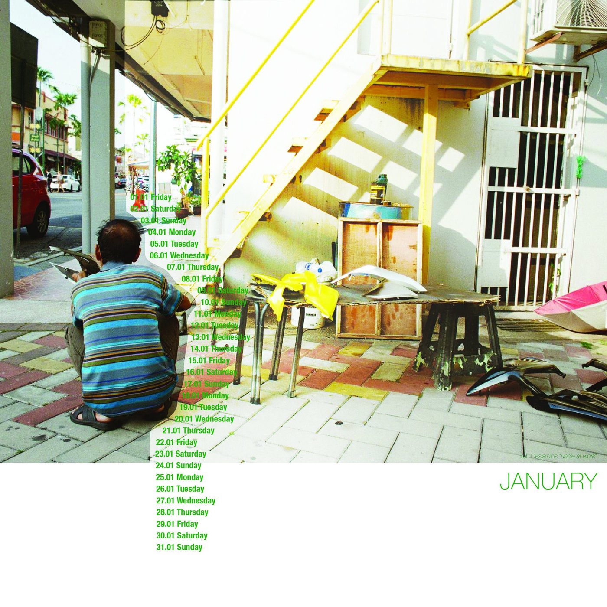
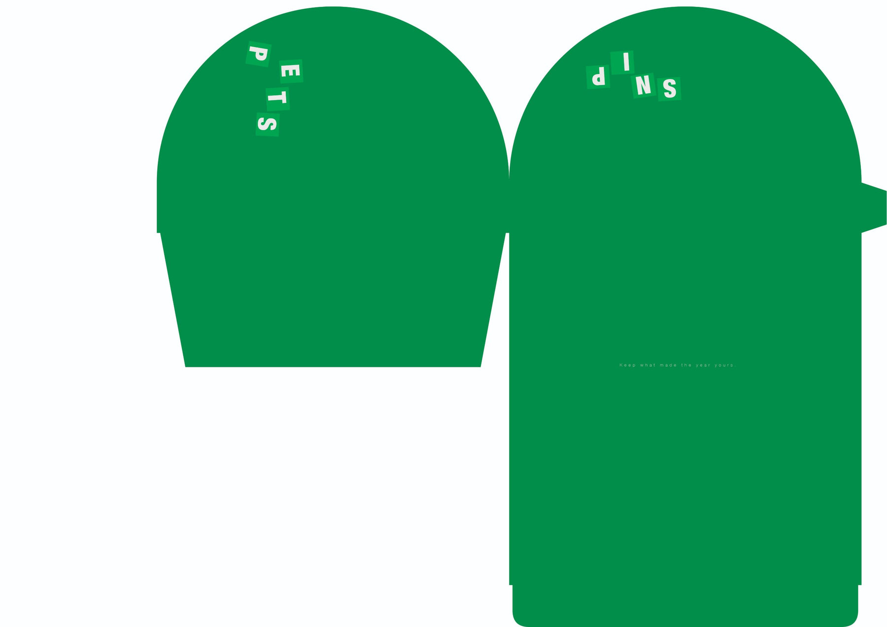
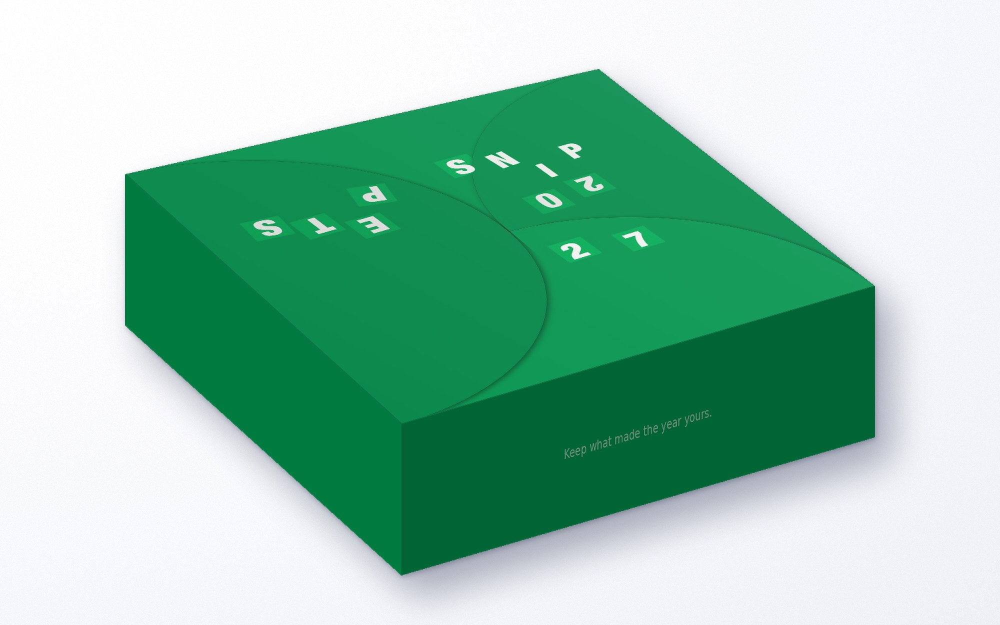
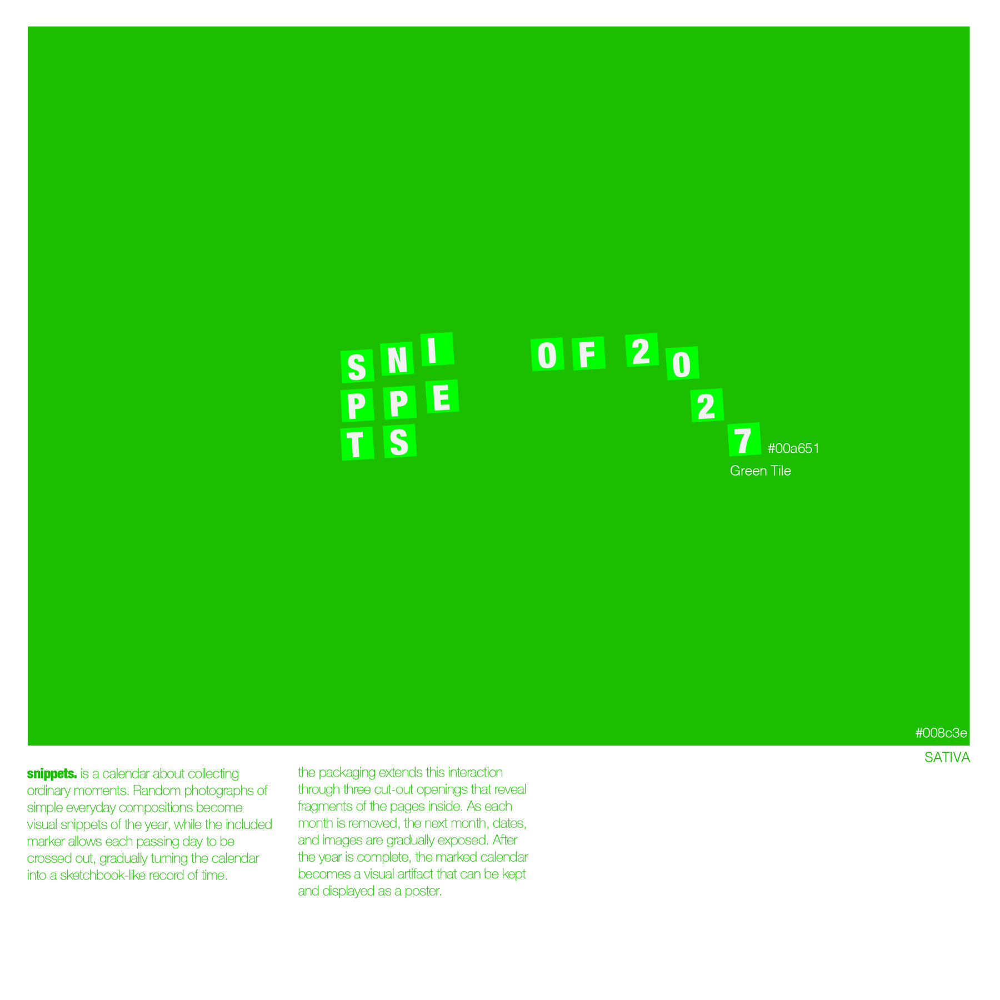
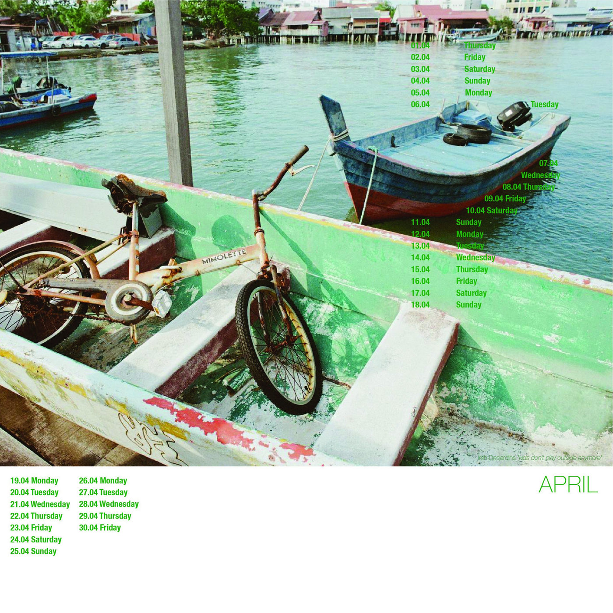
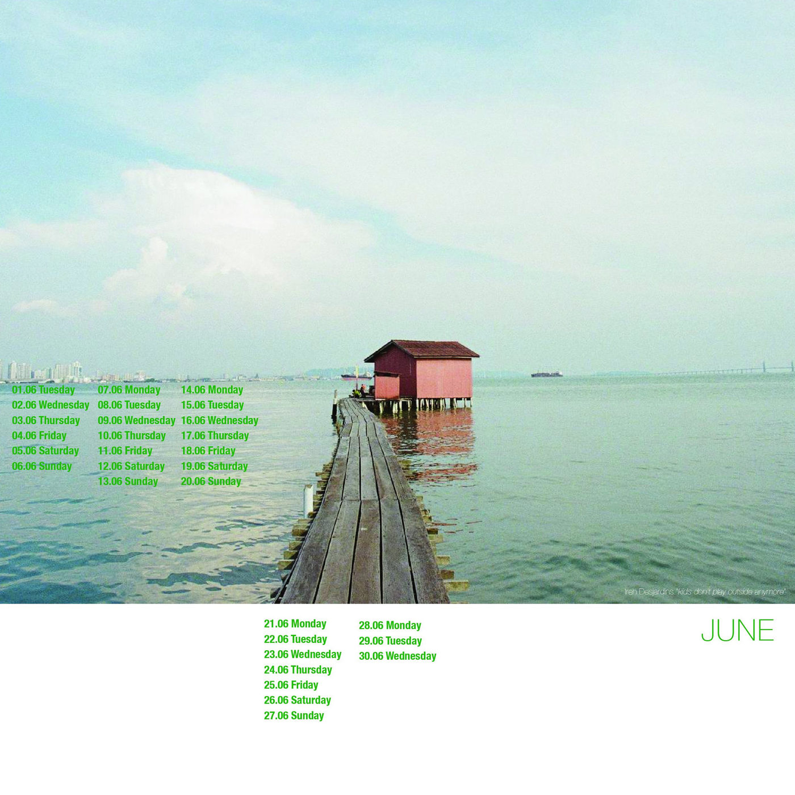
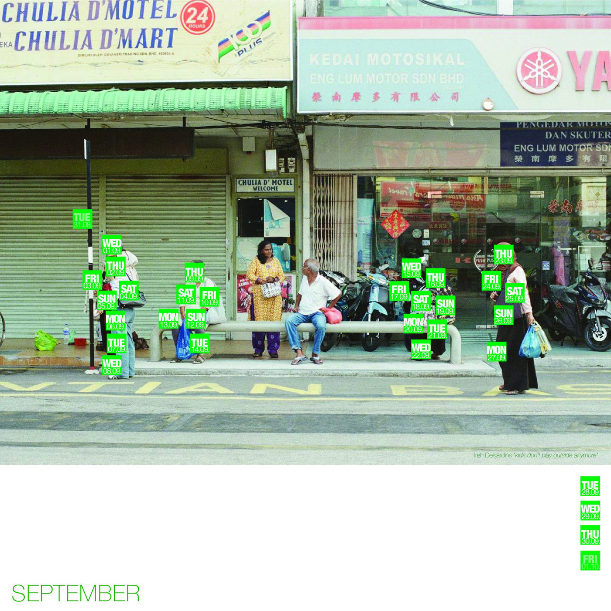
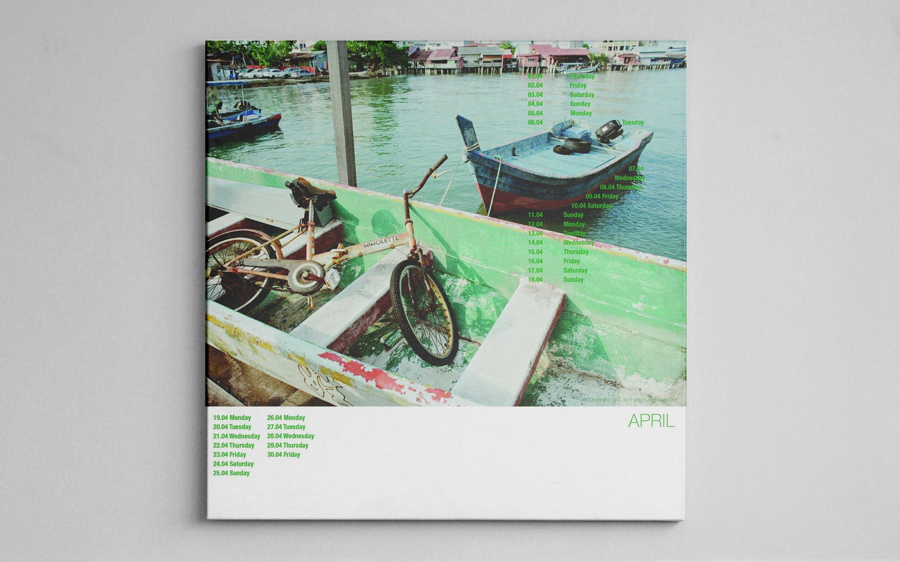
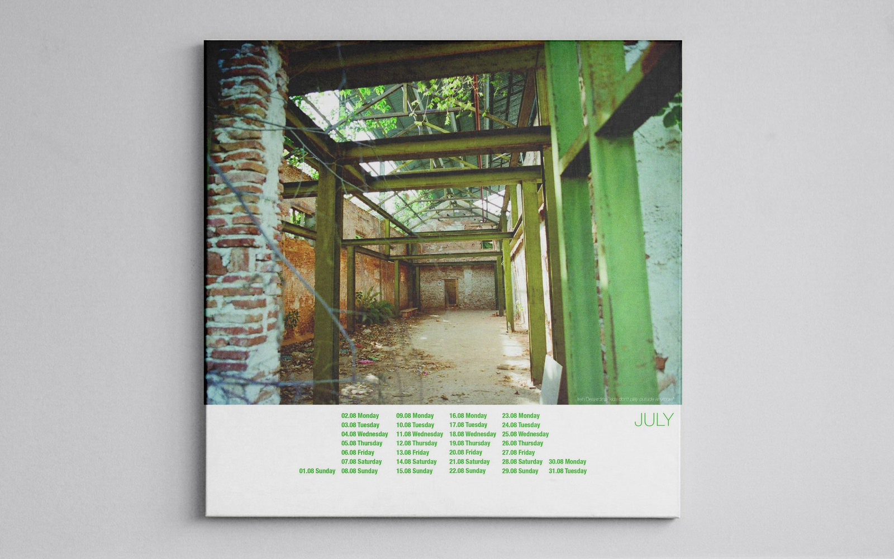
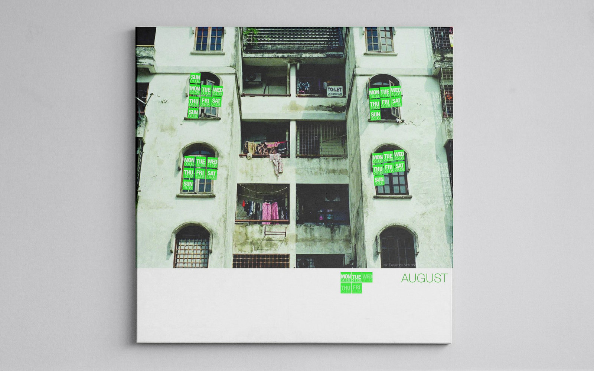

01
System
The type and grid rules that every month follows.

02
A year in street photographs

Overview
A calendar made from a year of street photographs, with the days set into each picture.
BriefBuild a twelve-month calendar as one visual system: the same rules for type, numerals and image across every month.
ApproachEach month starts from a street photograph. The days are set into the picture itself, and the packaging continues the system: four arched flaps fold to the centre to spell Snippets 2027.
5 steps
The type and grid rules that every month follows.
How the twelve months branch from one set of rules.

Each photograph carries its own month, with the days set into the image.


Nets for the box, tested before folding.


Four arched flaps folded to the centre spell Snippets 2027.
















